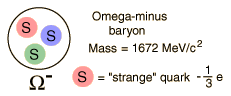
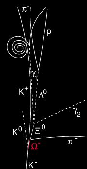
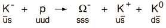
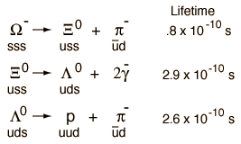

The Omega-Minus Baryon
| Particle | Symbol | Makeup | Rest mass
MeV/c2 | B | S | Lifetime | Decay Modes |
| Omega | Ω- | sss | 1672 | 3/2 | +1 | -3 | 0.82
x10-10 | Ξ0π-, Λ0K- |
|  |
The omega-minus, a baryon composed of three strange quarks, is a classic example of the need for the property called "color" in describing particles. Since quarks are fermions with spin 1/2, they must obey the Pauli exclusion principle and cannot exist in identical states. So with three strange quarks, the property which distinguishes them must be capable of at least three distinct values.
|
|

V. E. Barnes et al., Phys. Rev. Lett. 12, 204 (1964)
|
The discovery of the omega baryon was a great triumph for the quark model of baryons because it was searched for and found only after its existence, mass, and decay modes were predicted by the quark model. It was discovered at Brookhaven in 1964.
At left is a sketch of the bubble chamber photograph in which the omega-minus baryon was discovered.
The omega-minus was produced by a K-p collision which produced the omega-minus and two kaons.

Considering the particle conservation laws, this interaction conserves strangeness and therefore proceeds by the strong interaction. The decays observed are as follows.

Note that all three of these decays violate strangeness conservation and therefore can proceed only by the weak interaction. This gives them longer lifetimes, on the order of 10-10 seconds.
|
Examining the decays of the omega-minus above, you see that a quark-antiquark pair can be added on the right, provided the process satisfies conservation of energy. It is expected that the strange quark will be transmuted to an up quark by a quark decay process involving the W- vector boson. This can produce an electron plus and antineutrino, but an alternative W- process involves the production of an up plus an antiup-down (a p- meson). It appears that alternative decay is operating here.
In the decay of the Xi particle above, a lambda baryon and two gamma rays are shown as the products. Actually, the primary decay of the Xi is to a lambda-zero and a pi-zero. It is just that the π0 decays into two gammas with a lifetime of about 10-16 seconds, so the two gamma rays appear to come from the same point as the lambda.
According to the Particle Data Book, the decays of the omega minus branch as follows: Λ0K- 67.8%, Ξ0π- 23.6%, and Ξ-π0 8.6%.
|
Index
Particle concepts |